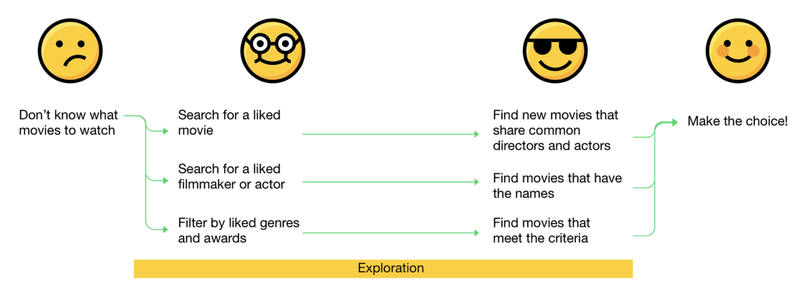
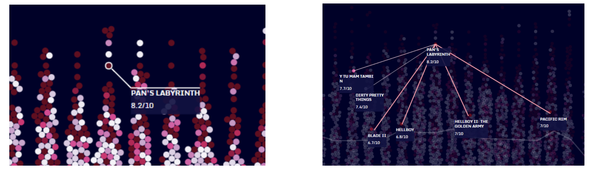
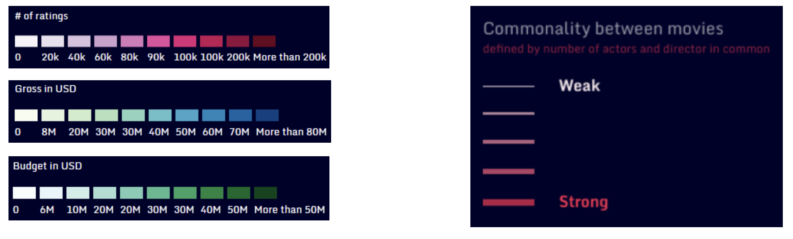

Duration
2017 Fall @ CS7450 Information Visualization
My Role
In the project, I was responsible for design. I came up with the initial concept. After user research and determining datasets, I defined user tasks, interactions, and features supporting them. I also designed the visualization and determined the visual mapping of data. Later, I also participated in the development and took care of all the styling.
Methods and Tools
Interview, Persona, Information visualization design, HTML/CSS/JavaScript, D3.js
Introduction
"For all of the difficulties, frustrations and hardships", Angelopoulos once said, "filmmaking is, finally, a human adventure".
If you enjoy movies, MovieHunt is for you. MovieHunt is an interactive visualization designed to help you discover the commonality of directos and actors between movies and explore trends over time.
We followed a user-centered design process to make sure that the MovieHunt could be able to answer questions our target users care about most. Our goal of answering users' questions impacted the whole design process even including the dataset construction. While designing, I had to consider user needs, constraints from data and technical issus, as well as information visualization principles.
User Research
I love watching films and cinema arts. I've always wanted a tool to help me explore movies and make an informed decision of which one to watch next. So I conceptualized and proposed this project. However, I am not going to represent all of the users. Prior to solutions, I need to know if the problems did exist. Is it only me suffering from movie drought? Who are our users? What problems do they encounter? What questions they would like to ask with a potential visualization?
So we did user research! We interviewed with six participants to learn about their movie-watching habits and information needs. The results indicated that we have two segmentations of potential users: enthusiasts and casual viewers.
Personas
Apparently, they have different knowledge levels in the area. But the two groups of people share the same need: looking for movies to watch.
They have different pain points. Enthusiasts have their own criteria for search, but they find it hard to get this information from Google/Wikipedia; Casual viewers watch fewer movies and tend to follow popular trends with an emphasis on ratings but there is no such a place displaying movies mapped to their ratings.
One crucial finding is that people tend to pick movies to watch based on actors and actresses. This is also why studios and filmmakers will pay huge amount of money for star power. A lot of actors, especially higher-profile ones, have “brands.” Our users believe that their names will denote a certain level of quality of the movies.
Another finding that later impacted on our design is that people care about ratings. They really do. Some of our users also care about other performance metrics of movies like popularity, gross and budget.
Design Goals
Our design goal is to help users make informed decisions of movie to watch. We summarized questions that our users want to answer with our visualization.
#1. "What are the movies that have same casts or directors as movies that I like?"
#2. "How are these movies rated?"
#3. "What are some trends over time and how good movies stand out?"
One thing that I kept in mind was that sometimes users don't know what they want before they see the thing, especially when there is no such a product fullfilling their needs in existence. After confirming user needs and collecting their pain points, I decided to move forward with design. Then we would have artifacts to show to users and get their feedback.
Design and Challenges
Concepting
I started to think about how we could answer the users' analytical questions with a data visualization and what we could offer compared to IMDB and other information source.
I kept a parking lot of inspirations and ideas and finally moved forward with the one above because it solves our user needs at best. The core of our visualization is the display of network among movies. We define connected movies as movies that have same casts or the same director. Given two movies, the more people they share, they stronger their connection is. The idea was informed by our research findings.
Design to follow principles
I tried to provide enough feedback after users explore around, no matter it's mouseovering something or clicking something.
I placed the legends of color encoding so that users could understand the representation of the data.
Iterations
I designed the feature of search with autocomplete which fullfills movie enthusiasts' needs. Later we also added the feature of "Surprise me" when causual viewers complainted that they don't know what to search for and where to start exploring.

In some causal test, users mentioned there were too many components and they wouldn't know where to start. Some features were also neglected. I designed the tour page so that users know what they could do with our visualization.
Before, we also put all the filters in dropdown lists. However, it turned out that users wouldn't remember what constraints they set without them in view. So I later decided to unfold the lists.
Here is a video of our visualization. Check it out!